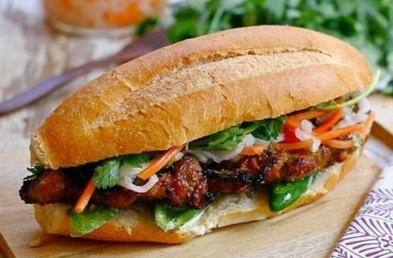

About My Home Country
Vietnam (Vietnamese: Việt Nam), officially the Socialist Republic of Vietnam (Vietnamese: Cộng hòa xã hội chủ nghĩa Việt Nam), is the easternmost country on the Indochina Peninsula. With an estimated 94.6
million inhabitants as of 2016, it is the 15th most populous country in the world. Vietnam shares its land borders with China to the north, and Laos and Cambodia to the west. It shares its maritime borders with Thailand through the
Gulf of Thailand, and the Philippines, Indonesia and Malaysia through the South China Sea. Its capital city is Hanoi, while its most populous city is Ho Chi Minh City.
Vietnamese Cuisine
Vietnamese cuisine traditionally features a combination of five fundamental taste "elements" (Vietnamese: ngũ vị): spicy (metal), sour (wood), bitter (fire), salty (water) and sweet (earth).[440] Common ingredients
include fish sauce, shrimp paste, soy sauce, rice, fresh herbs, fruits and vegetables. Vietnamese recipes use lemongrass, ginger, mint, Vietnamese mint, long coriander, Saigon cinnamon, bird's eye chilli, lime and basil leaves. Traditional
Vietnamese cooking is known for its fresh ingredients, minimal use of oil and reliance on herbs and vegetables where it is considered one of the healthiest cuisines worldwide.[442] The use of such meats as pork, beef and chicken was relatively
limited in the past, and as a result freshwater fish, crustaceans particularly crabs and molluscs became widely used. Fish sauce, soy sauce, prawn sauce and limes are among the main flavouring ingredients. There is an estimate of 40 Vietnamese
dishes with many are usually served as a norm in the country street food culture.



Holidays And Festivals

The country has eleven national recognised holidays which includes the New Year's Day on 1 January, Vietnamese New Year (Tết) from last day of the last lunar month to fifth day of the first lunar month, Hung
Kings Commemorations on 10th day of the third lunar month, Day of liberating the South for national reunification on 30 April, International Workers' Day on 1 May and National Day Celebration on 2 September. During Tết, many Vietnamese
from the major cities will return to their villages for family reunions and praying for dead ancestors. Older people will usually give the young a lì xì (red envelope) while special holiday food of bánh chưng (rice cake) in a square
shape together with variety of dried fruits as the festival sweets are presented in the house for visitors.[460] Many other festivals are celebrated throughout the seasons in a year including the Lantern Festival (Tết Nguyên Tiêu),
Mid-Autumn Festival (Tết Trung Thu) and various temple and nature festivals. In the highlands, Elephant Race Festival are held annually during the spring where riders will ride their elephants for about 1.6 kilometres and the winning
elephant will be given sugarcane. Traditional Vietnamese weddings remain widely popular and are often celebrated by expatriate Vietnamese in Western countries. In Vietnam, dress has been influenced by Western styles with the wearing
of white wedding dresses and black jackets although there were also many who still prefer to choose Vietnamese traditional wedding costumes for traditional ceremonies.
Languages
The national language of the country is Vietnamese (Tiếng Việt), a tonal Austroasiatic language (Mon–Khmer) which is spoken by the majority of the population. In its early history, Vietnamese writing used
Chinese characters before a different meaning set of Chinese characters known as Chữ nôm developed between the 7th–13th century. Quốc ngữ as the romanised Vietnamese alphabet used for spoken Vietnamese, was developed in the 17th century
by the Jesuit Alexandre de Rhodes and several other Catholic missionaries by using the alphabets of Romance languages, particularly the Portuguese alphabet which later became widely used through Vietnamese institutions during the French
colonial period. Vietnam's minority groups speak a variety of languages, including Tày, Mường, Cham, Khmer, Chinese, Nùng and Hmong. The Montagnard peoples of the Central Highlands also speak a number of distinct languages as their
language is derived from both the Austroasiatic and Malayo-Polynesian language groups. In recent years, a number of sign languages have developed in the major cities.